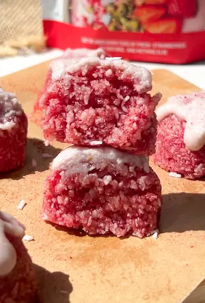

No Bake Strawberry Coconut Bites (4 ingredients, no oven)
aren't these the cutest shade of pink you have ever seen! these no bake strawberry coconut bites taste like a strawberry sugar cookie crossed with a coconut macaroon and the best part is they are only 4 ingredients, take 15 minutes of prep and no oven is needed. this is one of those recipes where you make a batch and immediately want to make another. if you loved my viral 3 ingredient coconut truffles then these no bake strawberry coconut bites have to be your next (no) bake!
the strawberry powder is the star of the show in this recipe. it adds that vibrant pink colour and the strawberry flavour to these no bake strawberry coconut bites. the strawberry powder is not something you can swap for fresh or frozen strawberries. however, it makes these little bites the perfect sweet treat for when you don't have any fruit on hand or strawberries are out of season. both fresh or frozen strawberries add too much moisture and will make the mixture wet and impossible to shape. the strawberry powder is what gives you that concentrated, candy like strawberry flavour and that beautiful blush-pink colour all the way through each bite without adding any extra liquid.
if you haven't baked with strawberry powder or freeze dried strawberries before, it's a really fun ingredient to experiment with for no bake recipes, and its surprising how flavourful it really is! one heaped tablespoon is all you need and the strawberry flavour it delivers is the perfect touch. i'm also shocked that i haven't used any fresh strawberries in this recipe each time i taste it. more on the nutritional benefits of freeze dried strawberry powder below.
the second ingredient fighting for center stage is the desiccated coconut, which is the base and it's what gives these bites their chewy, dense, macaroon-like texture. when blended in the food processor with the maple syrup and coconut oil it comes together into a mixture that has this soft, almost cookie-like chew straight from the fridge. coconut is a source of medium chain triglycerides, a type of fat the body processes differently to long chain fats and which some research links to sustained energy and appetite regulation. it's also rich in manganese which supports bone health and metabolism. so if you normally are cautious about your fat intake remember that coconut is a healthy fat and your body needs a certain amount to produce hormones and support essential processes in the body. so you can feel good about eating these cuties knowing you are satisfying your sweet tooth while nourishing your body.
now onto the method, and specifically the ice cream scoop, which is not really optional here. you cannot shape these with your hands. the first time i tested this recipe i was about to call it a fail and move on as i just could not shape them, i ended up with crumbly, uneven lumps that fell apart the second i tried to pick them up. but they were just too yummy to give up on and i knew i had to play around with the method until i found a way that works, which is where the ice cream scoop comes in. since the mixture doesn't bind the way a traditional cookie dough does because it's no bake, there's no egg or starch, it needs the compression from the scoop to hold its shape. add the mixture to a standard ice cream scoop, press it down really firmly so there are no air pockets and fill it up until the scoop is full, then release onto a lined tray. the firmer you press, the cleaner the shape and the better they hold once set. from there, straight into the fridge or freezer for at least 30 minutes. they're too soft straight from the processor and will not hold together if you try to eat them before they've had time to firm up. the freezer step is not optional here.
the icing however, is completely optional and the bites are just as good without it. but if you want something that looks a little more special, the coconut butter, strawberry powder and maple syrup glaze comes together in about two minutes and it dries into a gorgeous pink-tinted coating. melt the coconut butter (it's usually solid at room temperature so just warm it gently), stir in the strawberry powder and maple syrup until smooth, then spoon a little over each bite and finish with an extra dusting of strawberry powder on top. they look adorbs and the extra layer of strawberry flavour is really nice if you like things on the sweeter and cuter side. if you want to skip it entirely though, they're just as yum.
why i love these no bake strawberry coconut bites nutritionally: aside from the coconut's mcts and manganese, strawberry powder made from freeze dried strawberries retains most of the vitamin c and polyphenols of fresh strawberries, including anthocyanins and ellagic acid, both of which have well studied antioxidant and anti-inflammatory properties. maple syrup, while still a sweetener, contains zinc and manganese alongside its natural sugars and has a lower glycemic index than honey or white table sugar. so these no bake strawberry coconut bites are a cute, delish and actually nourishing.
the pink colour alone makes these no bake strawberry coconut bites perfect for a valentine's or galentine's brunch spread, a baby shower table, or honestly just any time you want something pretty without any real effort. and because the strawberry powder works year round unlike fresh fruit, you can make these in january just as easily as in july. they're the kind of thing you bring to a gathering and everyone asks what's in them, and the answer (four ingredients) never fails to surprise people.
if you love a no bake bite or ball, my coconut truffles are another really easy one, and my brownie batter bars and matcha ganache bars are both brilliant if you are in the mood for something a little more chocolatey or matcha forward.
Frequently Asked Questions
How do I store these strawberry coconut bites?
store in an airtight container in the fridge for up to a week or in the freezer for up to a month. they're best eaten cold, straight from the fridge or with a few minutes thaw if coming from the freezer. they will soften at room temperature so keep them chilled until you're ready to eat them.
Can I use fresh or frozen strawberries instead of strawberry powder?
no, and this is the one ingredient in the recipe that really can't be substituted with the fresh or frozen version. both fresh and frozen strawberries bring too much moisture and will make the mixture wet and impossible to shape or scoop. strawberry powder or finely ground freeze dried strawberries are what give you that concentrated flavour and the beautiful pink colour without any added liquid. it's a great ingredient to have on hand as it keeps really well and is the perfect addition to any sweet treat or smoothie/oats!
Where can I buy strawberry powder or freeze dried strawberries?
both are widely available online (amazon has lots of options) and in most health food shops. freeze dried strawberries are often easier to find than pre-made strawberry powder. if you buy freeze dried strawberry slices or pieces, just blitz them in a blender or food processor until they become a fine powder, then measure out a heaped tablespoon.
How many bites does this recipe make?
it depends entirely on how big you make them. using a standard ice cream scoop gives you approximately 6 bites. a smaller scoop will give you more, a larger one fewer. the recipe is small batch by design so if you want more just double the ingredients and the method stays exactly the same.
Can I omit the icing?
yes, completely. the bites are delicious without the icing and the strawberry flavour from the powder in the base is more than enough on its own. the icing just adds a pretty pink finish and a little extra sweetness, which makes them look more special for occasions like valentine's day or a baby shower. but day to day, they're absolutely fine without it.
Why is my mixture not holding together when I scoop it?
this usually comes down to one of two things. either the coconut oil was too liquid when added (it needs to be solid, not melted, to bind the mixture properly) or the mixture needs a little more maple syrup to bring it together. add an extra half tablespoon of maple syrup, blend again, and try scooping. pressing very firmly into the scoop also makes a significant difference to how well the bites hold their shape.
Are these no bake strawberry coconut bites vegan and gluten free?
yes to both. all the ingredients (desiccated coconut, maple syrup, coconut oil, strawberry powder and vanilla) are naturally vegan and gluten free. just double check the label on your strawberry powder or freeze dried strawberries to make sure there's no cross contamination if you have coeliac disease or high gluten sensitivity.
What occasions are these best for?
the pink colour makes these a really fun choice for valentine's day, galentine's brunch, baby showers, or any kind of pink-themed spread. they look like they took a lot of effort without actually taking much effort at all, which is the best kind of party food. they also keep well in the freezer so you can make them a day or two ahead, which is useful if you're prepping for an event. i also add these to my uk heatwave freezer stash as they are so refreshing and no oven is needed.
Why is solid coconut oil used in these strawberry coconut bites?
the coconut oil is intentionally solid, or room temperature if your house is cool. you want it to be in its solid state so that it helps bind the ingredients together, if it's completely liquid it will be harder to shape the balls since the batter will be much wetter, eventually it will firm up in the freezer but it does make the method harder. if your coconut oil is in liquid form, pop it in the fridge for 10 to 15 minutes until it firms back up before adding it to the food processor. it will make all the difference in creating those smooth bites and easy release from the ice cream scoop.
Pro Tips
- Press the mixture into the ice cream scoop very firmly and make sure there are no air pockets before releasing.
- Do not try to shape these with your hands.
- Use solid coconut oil, not melted.
- Let them set in the fridge or freezer for at least 30 minutes before eating.
No Bake Strawberry Coconut Bites

Ingredients
- Bites
- Icing (optional)
Instructions
- Step 1: Add all bite ingredients to a food processor and blend until fully combined.
- Step 2: Load a standard ice cream scoop with the mixture and press down very firmly, filling the scoop almost full before releasing each bite onto a lined tray.
- Step 3: Place in the fridge or freezer for at least 30 minutes or until set and firm.
- Step 4: If making the icing, gently melt the coconut butter, then stir in the strawberry powder and maple syrup until smooth, adding a tiny splash of water to loosen if needed.
- Step 5: Spoon the icing over each bite and dust with extra strawberry powder.
- Step 6: Store in the fridge or freezer and enjoy cold.
Nutrition Facts
Per one serving:
*Nutritional information is estimated and will vary depending on the ingredients and brands you use. Basic macros don't reflect the full nutritional value including vitamins, minerals, antioxidants, and other beneficial compounds. Please use this as a guideline only.